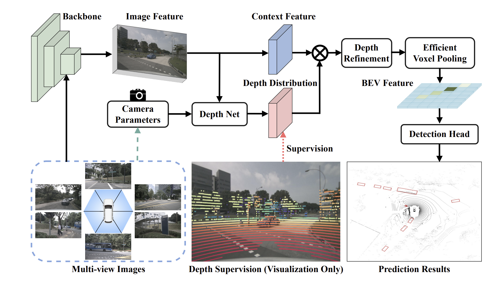
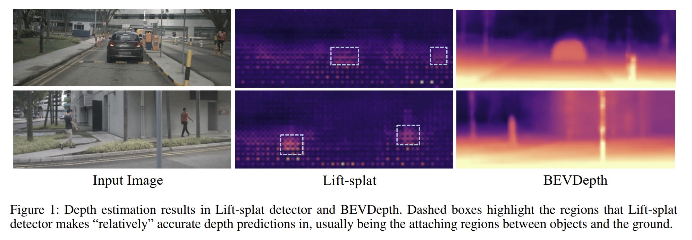

BEVDepth: Acquisition of Reliable Depth for Multi-view 3D Object Detection

BEVDepth 的框架,图像骨干网络（Image Backbone）从多视图图像中提取图像特征。深度网络（Depth Net）以图像特征为输入，生成上下文信息与深度信息，并得到最终的点特征（point feature）。体素池化（Voxel Pooling）将所有点特征统一到同一坐标系下，并将其池化到 BEV 特征图上。
摘要
在本研究中，我们提出了一种具备可信深度估计能力的新型三维目标检测器，将其命名为 BEVDepth，适用于基于相机的鸟瞰图（Bird’s-Eye-View，简称 BEV）三维目标检测任务。
我们的研究基于一个核心观察结论：尽管深度信息对相机三维检测至关重要，但现有方法中的深度估计效果仍存在显著不足。BEVDepth 通过引入显式深度监督，解决了这一问题。同时，我们还设计了相机感知深度估计模块，以提升深度预测性能。
此外，针对特征反投影精度不足所带来的副作用，我们提出了一种新型深度优化模块（Depth Refinement Module）来应对。在定制化高效体素池化（Efficient Voxel Pooling）与多帧机制的辅助下，BEVDepth 在具有挑战性的 nuScenes 测试集上实现了 60.9% 的新当前最优（state-of-the-art）NDS 指标，同时保持了较高的效率。这也是基于相机的检测模型首次实现 60% 的 NDS 分数。相关代码已开源，地址为https://github.com/Megvii-BaseDetection/BEVDepth。
引言部分总结
研究背景与传感器对比：当前自动驾驶系统的三维目标检测与环境感知主要依赖激光雷达（LiDAR）和相机两类传感器。其中，激光雷达方法虽能输出可靠检测结果，但成本较高；基于多视图相机的方法因成本优势，近年关注度持续上升，且 LSS 方法已验证其用于三维感知的可行性。
BEV 表示方法的价值：LSS 方法通过 “提升（lift）- 映射（splat）” 流程，将多视图特征转化为鸟瞰图（BEV）特征，不仅支持多相机系统端到端训练，还能为 BEV 分割、目标检测、运动规划等下游任务提供统一空间，具有重要应用意义。
核心问题发现：尽管基于 LSS 的感知算法已取得成功，但该流程中 “学习到的深度信息” 未被充分研究。论文作者通过定性分析（可视化深度估计结果）发现，即便某 LSS 架构检测器在 nuScenes 基准达 30 mAP，其深度估计质量仍极差 —— 仅少数特征区域能输出合理深度，多数区域无法满足需求，并进一步指出
现有 LSS 深度学习机制存在三大缺陷：
深度精度不足（依赖检测损失间接监督）、
深度模块过拟合（多数像素训练不充分，泛化能力存疑）、
BEV 语义精度低（深度不佳导致特征反投影位置错误）。
关键验证与研究意义：论文作者通过实验验证深度质量的重要性 —— **将 LSS 的学习深度替换为点云生成的真实深度（ground-truth）**后，mAP、NDS 均提升近 20%，平移误差（mATE）从 0.768 降至 0.393，明确 “提升深度质量是实现高性能相机三维检测的关键”。
研究方案与成果初步展示：基于上述问题与结论，论文作者提出新型多视图三维检测器 BEVDepth，其核心设计包括：利用点云提取的深度监督信息指导深度学习、将相机内参外参编码进深度模块以提升鲁棒性、引入深度优化模块优化深度质量；同时搭配定制化高效体素池化与多帧融合技术，最终在 nuScenes 测试集实现 60.9% NDS 的新当前最优（SOTA）结果，且保持高效率，成为首个 NDS 达 60% 的相机基检测模型

相关工作
2.1 基于视觉的三维目标检测
基于视觉的三维检测旨在预测目标的三维边界框。该问题属于 “不适定问题”（ill-posed problem），因为从单目图像中估计目标深度本质上存在歧义性。即便使用多视图相机，在无视图重叠的区域估计深度仍具挑战性。因此，深度建模是基于视觉的三维检测的核心环节。
相关研究主要分为两大分支：
直接从二维图像特征预测三维边界框：对二维检测器的检测头稍作修改，即可用于三维检测，例如 CenterNet（Zhou、Wang 和 Krahenbühl，2019）。M3D-RPN（Brazil 和 Liu，2019）提出深度感知卷积层，以增强空间感知能力；D4LCN（Huo 等人，2020）利用深度图指导动态核学习；FCOS3D（Wang 等人，2021b）将三维目标转换到图像域，进而预测目标的二维与三维属性；PGD（Wang 等人，2022a）提出几何关系图，为三维目标检测的深度估计提供助力；DD3D（Park 等人，2021a）则证明，深度预训练能显著提升端到端三维检测的性能。
在三维空间中预测目标：存在多种将二维图像特征转换到三维空间的方法。典型方法包括：将基于图像的深度图转换为伪激光雷达（pseudo-LiDAR）以模拟激光雷达信号（Wang 等人，2019；You 等人，2019；Qian 等人，2020）；利用图像特征生成三维体素（Rukhovich、Vorontsova 和 Konushin，2022）或正射特征图（Roddick、Kendall 和 Cipolla，2018）。其中，LSS（Philion 和 Fidler，2020）提出一种视图转换方法，通过显式预测深度分布，将图像特征投影到鸟瞰图（BEV）上，该方法已被证明在三维目标检测中具有实用性（Reading 等人，2021；Huang 等人，2021；Huang 和 Huang，2022）。BEVFormer（Li 等人，2022b）借助局部注意力机制与网格状 BEV 查询，实现二维到三维的转换；DETR3D（Wang 等人，2022b）沿用 DETR（Carion 等人，2020）的思路，结合 Transformer 与目标查询进行三维目标检测；PETR（Liu 等人，2022a）则通过引入三维位置感知表示，进一步提升了检测性能。
2.2 基于激光雷达的三维目标检测
由于激光雷达的深度估计精度较高，基于激光雷达的三维检测方法被广泛应用于自动驾驶感知任务，代表性方法如下：
VoxelNet（Zhou 和 Tuzel，2018）：将点云体素化，把稀疏点云转换为密集体素，随后在密集空间中生成边界框，以辅助卷积过程中的索引操作。
SECOND（Yan、Mao 和 Li，2018）：在 VoxelNet 基础上，通过设计更高效的结构与真实值采样（gt-sampling）技术，提升了在 KITTI 数据集（Geiger、Lenz 和 Urtasun，2012）上的性能；同时引入稀疏卷积，加快了模型运行速度。
PointPillars（Lang 等人，2019）：采用 “柱体（pillars）” 对不对进行编码，而非使用三维卷积，在保证良好性能的同时提升了检测速度。
CenterPoint（Yin、Zhou 和 Krahenbuhl，2021）：提出无锚框（anchor-free）检测器，将 CenterNet（Zhou、Wang 和 Krahenbühl，2019）扩展到三维空间，在 nuScenes 数据集（Caesar 等人，2020）和 Waymo 开放数据集（Sun 等人，2020）上均实现了高性能。
PointRCNN（Shi、Wang 和 Li，2019）：与上述基于网格的方法不同，该方法直接从点云中生成候选框，随后通过激光雷达分割识别候选框对应的前景点，并在第二阶段生成边界框。
此外，Qi 等人（2019）、Yang 等人（2022）提出利用霍夫投票（Hough voting）聚合点特征，再从聚类结果中生成边界框。两类方法的特点对比如下：基于网格的方法因密集特征表示，速度更快，但会丢失原始点云中的部分信息；基于点的方法能保留原始点云关联，但在为每个点寻找邻域时效率较低。PV-RCNN（Shi 等人，2020）的提出则兼顾了效率与灵活性，既保证模型运行效率，又能为点特征提供可调整的感受野。
2.3 深度估计
深度预测是单目图像理解的关键环节，相关研究主要分为两类思路：
基于回归或无监督学习的深度估计：Fu 等人（2018）采用回归方法，结合空洞卷积与场景理解模块，实现图像深度预测；Monodepth（Godard、Mac Aodha 和 Brostow，2017）无需监督信息，利用视差与重建过程进行深度预测；Monodepth2（Godard 等人，2019）则结合深度估计网络与姿态估计网络，实现单帧图像的深度预测。
基于代价体（cost-volume）的深度估计：MVSNet（Yao 等人，2018）首次将代价体引入深度估计领域。基于该方法，后续研究不断优化：RMVSNet（Yao 等人，2019）利用 GRU 降低内存消耗；MVSCRF（Xue 等人，2019）加入条件随机场（CRF）模块；Cascade MVSNet（Gu 等人，2020）将 MVSNet 改进为级联结构。此外，Wang 等人（2021a）通过多尺度融合生成深度预测，并引入自适应模块，在提升性能的同时降低内存消耗；Bae 等人（2022）融合单视图与多视图图像，同时引入深度采样技术，减少计算成本。
3 深入分析 Lift-splat 架构中的深度预测
在第 1 节中，论文作者指出，基于 LSS 架构的检测器即便深度估计效果极差，仍能取得尚可的三维检测结果。本节中，论文作者首先回顾了基于 Lift-splat 构建的基准三维检测器的整体结构，随后在该基准检测器上开展简单实验，以揭示上述现象的本质，最后分析该检测器存在的三大缺陷，并指出潜在的解决方案。
3.1 基准检测器的模型架构
论文作者所构建的基础 Lift-splat 检测器，仅将 LSS（Philion 和 Fidler，2020）中的分割头替换为 CenterPoint（Yin、Zhou 和 Krahenbuhl，2021）检测头，以实现三维目标检测。具体而言，该检测器包含图 4 所示的四个核心组件：
图像编码器（Image Encoder）：采用 ResNet（He 等人2016）等网络，从 N 个视角的输入图像\(I = \{I_i, i = 1, 2, ..., N\}\)中提取二维特征\(F_{2d} = \{F_{2d}^i \in \mathbb{R}^{C_F \times H \times W}, i = 1, 2, ..., N\}\)。其中，\(H 、W 、C_F\)分别代表特征图的高度、宽度与通道数。
深度网络（DepthNet）：从二维特征$\(F_{2d}\)\(中估计图像深度\)D_{pred} = {D_{pred}^i \in \mathbb{R}^{C_D \times H \times W}, i = 1, 2, …, N}\(。其中，\)C_D$代表深度区间（depth bins）的数量。
视图转换器（View Transformer）：通过公式（1）将二维特征\(F_{2d}\)投影为三维特征\(F_{3d}\)，再将这些三维特征池化为统一的鸟瞰图（BEV）特征\(F_{bev}\)。
三维检测头（3D Detection Head）：预测目标的类别、三维边界框偏移量及其他属性。
三维特征的计算如公式（1）所示：
（说明：符号 “\(\otimes\)” 代表特征维度扩展后的逐元素相乘，实现二维图像特征与深度信息的融合。）
3.2 Lift-splat 架构的 “易实现性”
通常认为，学习到的深度\(D_{pred}\)至关重要，因为它是构建 BEV 特征以支撑后续任务的核心。然而，图 1 中极差的深度可视化结果与这一共识相矛盾。在第 1 节中，论文作者将 Lift-splat 架构的成功归因于 “部分合理的学习深度”；本节中，论文作者进一步通过实验探究该架构的本质 —— 将\(D_{pred}\)替换为随机初始化的张量，并在训练与测试阶段均固定该张量，实验结果如表 1 所示。
实验发现一个意外现象：当\(D_{pred}\)被替换为随机软值（soft values）后，mAP（平均精度均值）仅下降 3.7%（从 28.2% 降至 24.5%）。论文作者推测，即便用于特征反投影的深度存在严重偏差，深度分布的 “软特性” 仍能在一定程度上帮助特征投影到正确的深度位置，从而使检测器获得尚可的 mAP；但与此同时，这种随机深度也会引入大量不可忽略的噪声。
为验证这一推测，论文作者进一步将 “随机软深度” 替换为 “随机硬深度”（每个位置采用独热激活，one-hot activation），此时 mAP 下降幅度扩大至 6.9%。这一结果验证了上述推测，表明只要正确位置的深度存在激活信号，检测头就能正常工作—— 这也解释了为何图 1 中多数区域的深度估计效果极差，但检测器仍能取得合理的 mAP。
3.3 Lift-splat 架构的 “难优化性”
尽管基于 Lift-splat 的检测器能取得尚可的结果，但其性能远未达到理想水平。本节中，论文作者揭示该架构工作机制存在的三大缺陷：深度精度不足、深度模块过拟合、BEV 语义精度低。为更清晰地论证观点，论文作者设置了两个基准模型进行对比：
基准检测器（Base Detector）：朴素的基于 LSS 架构的检测器；
增强检测器（Enhanced Detector）：在基准检测器基础上，对\(D_{pred}\)引入来自点云数据的额外深度监督（具体细节将在第 4 节详述）。
缺陷 1：深度精度不足
在基准检测器中，深度模块的梯度仅来源于检测损失，属于间接监督。为验证该机制下学习深度的质量，论文作者采用 Eigen 等人（2014）提出的常用深度估计指标，在 nuScenes 验证集上对\(D_{pred}\)进行评估，指标包括尺度不变对数误差（SILog）、平均绝对相对误差（Abs Rel）、平均平方相对误差（Sq Rel）与均方根误差（RMSE）。
实验采用两种评估方案：1）评估每个目标的所有像素；2）评估每个目标的 “最优预测像素”。结果如表 2 所示：
当评估所有前景区域时，基准检测器的 Abs Rel 仅为 3.03，远差于现有深度估计算法（Li 等人，2022a；Bhat、Alhashim 和 Wonka，2021）；
增强检测器的 Abs Rel 则从 3.03 大幅降至 0.23，达到合理水平；
值得注意的是，基准检测器在 “最优匹配方案” 下的性能，与增强检测器在 “全区域方案” 下的性能接近。
这一结果验证了第 1 节中的推测：若检测器未引入深度损失（如 Lift-splat 架构），仅能通过学习 “部分深度” 实现目标检测；而对 “最优匹配方案” 引入深度损失后，学习深度的质量可进一步提升。综上，间接监督下学习到的深度精度不足，远不能满足需求。
缺陷 2：深度模块过拟合
如前文所述，基准检测器仅能学习 “部分区域” 的深度预测，多数像素无法被训练以输出合理深度 —— 这引发了论文作者对深度模块泛化能力的担忧：此类学习方式可能导致深度模块对图像尺寸、相机参数等超参数高度敏感。
为验证这一担忧，论文作者以 “图像尺寸” 为变量开展泛化性实验：
采用 256×704 的输入尺寸，分别训练基准检测器与增强检测器；
分别采用 192×640、256×704、320×864 三种尺寸对模型进行测试。
实验结果如图 2 所示：当测试图像尺寸与训练尺寸不一致时，基准检测器的精度损失更为显著；而增强检测器的精度损失则小得多。这一现象表明，未引入深度损失的模型（基准检测器）存在更高的过拟合风险，其对相机内参、外参噪声或其他超参数也可能表现出敏感性。
缺陷 3：BEV 语义精度低
在 Lift-splat 架构中，图像特征需通过学习到的深度反投影为视锥体特征，再经体素 / 柱体池化（Voxel/Pillar Pooling）聚合为 BEV 特征。图 3 显示，若缺乏深度监督，图像特征无法被正确反投影，导致池化操作仅能聚合 “部分语义信息”；而增强检测器在该场景下的表现更优。
论文作者推测，深度质量差会对目标分类任务产生负面影响，并通过以下方式验证：
提取两个模型的分类热力图（classification heatmaps）；
以 “正样本识别率（TP / (TP + FN)）” 为指标进行对比（其中，TP 代表被分配为正样本且被 CenterPoint 检测头正确分类的锚点 / 特征，FN 代表未被正确识别的正样本）。
表 3 结果显示，在不同正样本阈值下，增强检测器的正样本识别率均持续优于基准检测器，验证了 “深度质量差损害分类性能” 的推测，即深度精度不足会导致 BEV 语义精度低。
基于上述分析，论文作者意识到，为多视图三维检测器赋予 “更高质量的深度” 具有必要性，并据此提出了解决方案 ——BEVDepth。
4 BEVDepth
BEVDepth 是一种具备可靠深度估计能力的新型多视图三维检测器。为实现这一目标，该检测器采用了两种核心设计：一是在相机感知深度预测模块（DepthNet） 上引入显式深度监督；二是针对反投影后的视锥体特征，设计了一种新型深度优化模块（Depth Refinement Module）。
显式深度监督（Explicit Depth Supervision）
在基准检测器中，深度模块仅通过检测损失获得监督信号。但由于单目深度估计本身难度较高，仅依靠检测损失远不足以对深度模块进行有效监督。因此，论文作者提出利用点云数据P生成的真实深度\(D_{gt}\)，对中间深度预测结果\(D_{pred}\)进行监督。
设\(R_i \in \mathbb{R}^{3×3}\)和\(t_i \in \mathbb{R}^3\)分别为第\(i\)个视角下 “激光雷达坐标系到相机坐标系” 的旋转矩阵与平移矩阵，\(K_i \in \mathbb{R}^{3×3}\) 为第\(i\)个相机的内参矩阵。为获取真实深度\(D_{gt}\)，首先通过公式（2）进行计算：
该式计算结果可进一步转换为 \(2.5D\) 图像坐标 \(P_i^{img}(u, v, d)\)，其中\(u\)和\(v\)代表像素坐标系下的坐标。若某点云的 \(2.5D\) 投影结果不在第\(i\)个视角的图像范围内，则直接丢弃该点云（投影结果示例见图 4）。 随后，为使 “投影后点云” 与 “预测深度” 的维度形状保持一致，需对\(P_i^{img}\)依次执行最小池化（min pooling）与独热编码（one-hot）操作。论文作者将这两个操作统一记为函数\(\phi\)，最终生成的真实深度\(D_{gt}\)如公式（3）所示： 至于深度损失(L_{depth})，论文作者采用了简单的二元交叉熵（Binary Cross Entropy）进行计算。
相机感知深度预测（Camera-aware Depth Prediction）
根据经典相机模型，深度估计与相机内参密切相关，这意味着将相机内参融入深度网络（DepthNet）的建模过程具有一定难度。在多视图三维数据集中（如 nuScenes 数据集），不同相机可能具有不同的视场角（FOV），因此将相机内参纳入建模尤为重要。
为此，论文作者提出将相机内参作为深度网络（DepthNet）的输入之一，具体实现步骤如下：
相机内参维度提升：通过一个多层感知机（MLP）层，将相机内参的维度提升至与图像特征维度一致。
图像特征重加权：利用Squeeze-and-Excitation，SE 模块（Hu、Shen 和 Sun，2018），用处理后的相机内参对图像特征\(F_{2d}^i\)进行重加权，使网络更关注与深度估计相关的特征区域。
融合相机外参：将相机外参与处理后的内参拼接（concatenate），帮助深度网络感知图像特征\(F_{2d}\)在自车坐标系（ego coordinate system）中的空间位置。
设\(\psi\)代表原始深度网络（DepthNet），则整体相机感知深度预测的计算如公式（4）所示：
其中，\(\xi\)代表展平（Flatten）操作，用于将矩阵形式的相机参数（旋转矩阵\(R_i\)、平移矩阵\(t_i\)、内参矩阵\(K_i\)）转换为向量形式；符号 “\(\oplus\)” 代表向量拼接操作；“\(SE(\cdot \mid \cdot)\)” 表示用 “\(\mid\)” 右侧的相机参数（经 MLP 处理后）指导 SE 模块对左侧图像特征\(F_{2d}^i\)进行重加权。
论文作者还指出，已有研究（Park 等人，2021b）同样利用了相机感知能力，但该研究是根据相机内参对回归目标（深度值）进行缩放，导致其方法难以适配相机设置复杂的自动驾驶系统。与之不同，论文作者提出的方法将相机参数直接建模到深度网络内部，目标是提升中间深度预测结果的质量。
得益于 LSS 架构（Philion 和 Fidler，2020）的解耦特性，相机感知深度预测模块与检测头相互独立，因此无需修改回归目标（如深度区间划分、检测框参数等），最终使模型具备更强的可扩展性。
深度优化模块（Depth Refinement Module）
为进一步提升深度质量，论文作者设计了一种新型深度优化模块。
该模块的具体实现流程如下：首先，将三维特征\(F_{3d}\)的形状从\([C_F, C_D, H, W]\)重塑（reshape）为\([C_F \times H, C_D, W]\)；随后，在\(C_D \times W\)维度平面上堆叠多个 \(3×3\) 卷积层；最终，将卷积层的输出重塑回原始形状，并输入至后续的体素 / 柱体池化（Voxel/Pillar Pooling）操作中。
该模块的核心作用体现在两个方面：
当深度预测置信度较低时，深度优化模块能够沿深度轴\(C_D\)维度）聚合特征，增强特征的有效性；
从理论上讲，只要感受野足够大，即便深度预测存在偏差，该模块也能将特征优化到正确的空间位置。
综上，深度优化模块为视图转换器（View Transformer）阶段赋予了 “修正机制”，使其能够对那些投影位置不当的特征进行优化调整。
用深度分布的 “概率权重”，给 2D 特征的每个像素点 “贴” 上 “在不同深度位置的可能性标签”